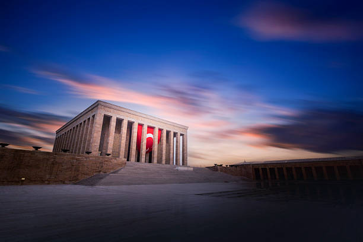
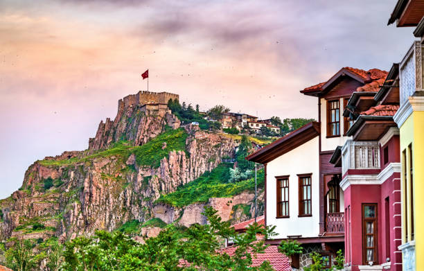
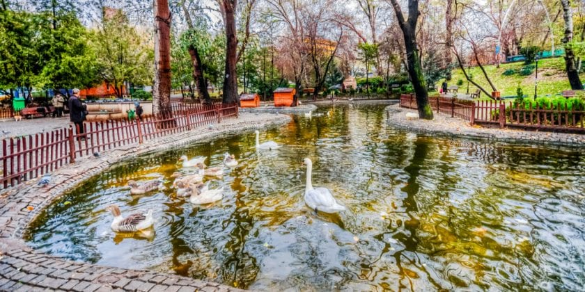
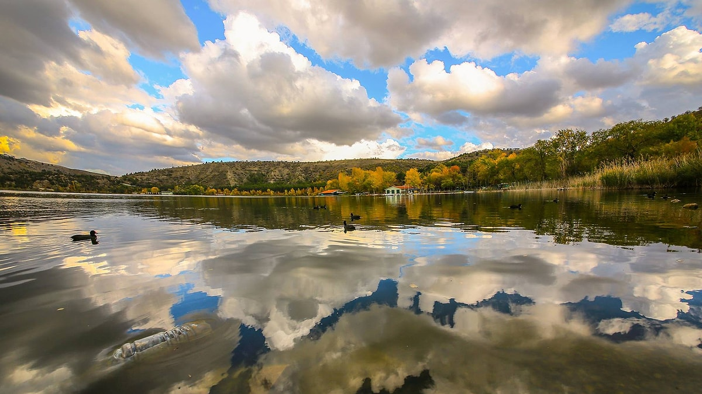

1. Anıtkabir

Türkiye Cumhuriyeti'nin kurucusu Mustafa Kemal Atatürk'ün anıt mezarı. Ankara'ya gelen herkesin ilk uğraması gereken, mimarisiyle büyüleyici bir yer.

Türkiye Cumhuriyeti'nin kurucusu Mustafa Kemal Atatürk'ün anıt mezarı. Ankara'ya gelen herkesin ilk uğraması gereken, mimarisiyle büyüleyici bir yer.

Şehri tepeden görebileceğiniz, dar ve tarihi sokaklarında yürüyüş yapabileceğiniz otantik bir bölge. Eski Ankara evleri harika fotoğraf kareleri sunuyor.

Tunalı Hilmi Caddesi'nin simgesi olan bu sevimli park, adını içindeki kuğulardan alıyor. Şehrin merkezinde nefes almak için en ideal noktalardan biri.

ODTÜ arazisi içinde yer alan bu göl, hafta sonları bisiklet sürmek ve doğayla iç içe vakit geçirmek isteyenlerin bir numaralı kaçış noktasıdır.